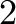
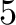

-
M_verbosity – integer (0).
-
M_random_seed – integer (17).
- A random seed just for the Master module.
-
upper_bound – double (no upper bound).
- This parameter is used if the user wants to artificially impose an
upper bound (for instance if a solution of that value is already
known).
-
lower_bound – double (no lower bound).
- This parameter is used if the user wants to artificially impose a
lower bound.
-
upper_bound_estimate – double (no estimate).
- This parameter is used if the user wants to provide an estimate of the
optimal value which will help guide the search. This is used in
conjunction with the diving strategy BEST_ESTIMATE.
-
tm_exe, dg_exe – strings (“tm”, “dg”).
- The name of the executable files of the TM and DG modules. Note that
the TM executable name may have extensions that depend on the
configuration of the modules, but the default is always set to the
file name produced by the makefile. If you change the name of the
treemanager executable from the default, you must set this parameter
to the new name.
-
tm_debug, dg_debug – boolean (both FALSE).
- Whether these modules should be started under a debugger or not (see
5.6.2 for more details on this).
-
tm_machine – string (empty string).
- On which processor of the virtual machine the TM should be run. Leaving this
parameter as an empty string means arbitrary selection.
-
do_draw_graph – boolean (FALSE).
- Whether to start up the DG module or not (see Section 5.6.4 for
an introduction to this).
-
do_branch_and_cut – boolean (TRUE).
- Whether to run the branch and cut algorithm or not. (Set this to FALSE to run the user's heuristics only.)
-
mc_search_order – integer (MC_FIFO).
- Use the fifo (MC_FIFO) or lifo (MC_LIFO) searh order during the multi
criteria solution procedure.
-
mc_warm_start – boolean(FALSE).
- Whether to solve the corresponding problem of each iteration from a warm
start loaded from a base iteration (which is the first iteration where
gamma = 1.0 and tau = 0.0) or from scratch. Currently, this option is
supported if only the supported solutions are desired to be found.
-
trim_warm_tree – boolean(FALSE).
- Whether to trim the warm start tree before re-solving. This consists of
locating nodes whose descendants are all likely to be pruned in the resolve
and eliminating those descendants in favor of processing the parent node
itself.
-
mc_compare_solution_tolerance – double(0.001).
- If the difference between the objective values of two solutions to be compared,
during the bicriteria solution procedure, are less than this tolerance, then
assume them to be equal.
-
mc_binary_search_tolerance – double(0).
- The tolerance to be used to differentiate the gamma values if binary search
is used during the bicriteria solution procedure. A value greater than zero
will cause the binary search to be activated.
-
prep_level – integer(5).
- Determines the level of preprocessing that should be done on the current MILP
instance. A level of less than 0 means that no preprocessing will be done.
At level  basic presolve routines are used. At higher levels more advanced
routines are deployed. At level , valid implications are derived.
-
prep_dive_level – integer(5).
- When a variable has been modified by preprocessing, then these changes can be
used to improve other variables and constraints in the instance as well. This
parameter controls how many times can we recursively try to improve the
instance if a change is made.
-
prep_impl_dive_level – integer(0).
- In some advanced preprocessing routines, a variable or constraint is modified
to check what implications can be derived from that change. When such an
implication is derived, it can recursively lead to more implications. This
parameter controls how many levels of recursion are allowed.
-
prep_impl_limit – integer(50).
- Determines the maximum number of implications that can be derived from
preprocessing.
-
prep_do_probing – integer(1).
- Determines if probing is used while preprocessing. Probing is not yet
implemented and this parameter does not have any effect.
-
prep_verbosity – integer(1).
- Determines the verbosity of messages from the preprocessing stage. Higher
levels will produce more verbose messages.
-
prep_reduce_mip – boolean (1).
- If some variables and constraints have been eliminated in preprocessing and if
prep_reduce_mip is , then the memory allocated for these deleted
variables and constraints is freed. Otherwise, these are retained in the
instance but are never used.
-
prep_probing_verbosity – integer(0).
- Determines the verbosity of messages from probing stage. Probing is not yet
implemented and this parameter does not have any effect.
-
prep_probing_level – integer(1).
- Determines the maximum level of probing that is carried out before
preprocessing is stopped. Probing is not yet
implemented and this parameter does not have any effect.
-
prep_display_stats – boolean (0).
- Determines if statistics on how many of each type of changes were made in the
preprocessing stage are displayed () or not (0).
-
keep_row_ordered – integer(1).
- When the value of this parameter is 1, a row ordered matrix is also
retained for use after the preprocessing stage. This capability is not yet
implemented and this parameter does not have any effect.
-
prep_do_sr – boolean (0).
- When the value of this parameter is 1, additional preprocessing is
performed by solving an LP with one constraint. This procedure is not
thoroughly tested.
-
max_sr_cnt – integer(5).
- This parameter controls the number of single-constraint LPs that are solved
for each constraint in the preprocessing stage. This procedure is not
thoroughly tested.
-
max_aggr_row_cnt – integer(0).
- This parameter is not used and has no effect.
-
prep_iter_limit – integer(10).
- Determines the maximum number of times preprocessing can be done on an
instance. If an instance has been modified by preprocessing, then the new
problem can be preprocessed again to get an even better formulation. This
parameter puts a limit on the number of times such preprocessing can be done.
-
write_mps – boolean (0).
- Determines if an MPS file be written after all preprocessing has been
performed. This can be used for debugging or if the user wants to save the
preprocessed instance.
-
write_lp – boolean (0).
- Determines if an LP file be written after all preprocessing has been
performed. This can be used for debugging or if the user wants to save the
preprocessed instance.
-
prep_time_limit – integer(50).
- Determines the maximum time in seconds that can be spent in preprocessing.